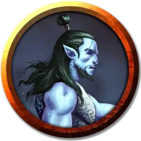

Киш
Kysh
Средний Гуманоид (Тритон), законно-добрый, именной НИП

Класс Доспеха 13
Хиты 27 (5к8 + 5)
Скорость 30 футов, плавая 30 футов
| мод | спас | ||
|---|---|---|---|
| СИЛ | 14 | +2 | +2 |
| ЛОВ | 16 | +3 | +3 |
| ТЕЛ | 12 | +1 | +1 |
| мод | спас | ||
|---|---|---|---|
| ИНТ | 10 | +0 | +0 |
| МДР | 13 | +1 | +1 |
| ХАР | 14 | +2 | +2 |
Навыки Выживание +3, Убеждение +4
Сопротивление урону холод
Чувства тёмное зрение 60 футов, пассивное Восприятие 11
Языки Общий, Первичный
Опасность 1 (200 опыта)
Бонус мастерства +2
Особенности
Амфибия. Киш может дышать на воздухе и под водой.
Посланник моря. Киш может передавать простые идеи животным, которые могут дышать под водой. Они могут понимать значение его слов, хотя у вас нет никакой специальной способности понять их в ответ.
Врождённое колдовство. Базовой характеристикой Киша является Харизма (Сл спасброска от заклинания 12, +4 к попаданию атаками заклинаниями). Он может накладывать следующие заклинания, не нуждаясь в материальных компонентах:
• 1/день: туманное облако [fog cloud].
Действия
Мультиатака. Тритон совершает две рукопашные атаки Копьём.
Копьё. Рукопашная или дальнобойная атака оружием: +4 к попаданию, досягаемость 5 футов или дистанция 20/60 футов, одна цель. Попадание: 5 (1к6 + 2) колющего урона или 6 (1к8 + 2) колющего урона, если используется двумя рукам для рукопашной атаки.
Описание
Пленник сахуагинов в "Финальном противнике", Киш - защитник глубоководных королевств, который готов присоединиться к партии в их борьбе. Тритоны - это жители Стихийного Плана Воды, которые отправились на Материальный план, чтобы наблюдать за темными местами океанских глубин. Они стоят на страже порталов, глубоководных пропастей и других мест, где могут появиться ужасающие монстры. Когда появляются такие угрозы, тритоны берутся за оружие, чтобы изгнать их из мира.